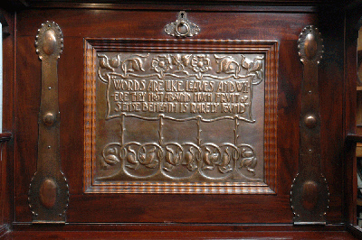
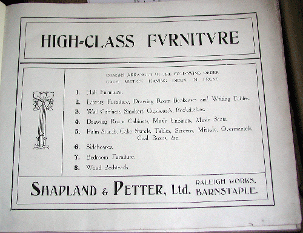
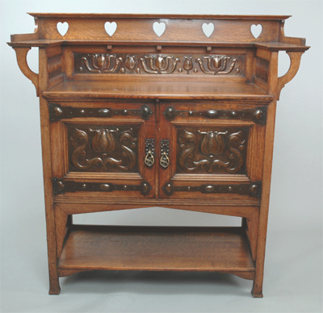
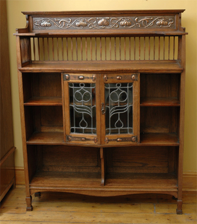

During 2005, the Arts and Crafts furniture of the Barnstaple based Shapland and Petter company was the subject of two important public exhibitions in UK. The Museum of Barnstaple and North Devon hosted the first ever Shapland and Petter exhibition in May and June 2005, followed by the Cannon Hall Museum exhibition in July to October 2005. These exhibitions celebrated the very best of Shapland and Petter Arts and Crafts furniture with some of the finest examples on show. The book to accompany the exhibition Shapland and Petter Arts and Crafts Furniture by Daryl Bennett proved to be a popular purchase for many who visited. A limited number of exhibition catalogues and original posters are still available and may well prove to be collectable.
Barnstaple Research Project

The recent exhibitions were funded through the Heritage Lottery Fund Grant awarded to the Museum of Barnstaple and North Devon in 2004,with additional funding from the Cannon Hall Museum in Barnsley. The HLF grant amounted to £50,000 and represented a major achievement in the development of the Shapland and Petter project which was initiated by Daryl Bennett working with Alison Mills at the Museum and Claire Gulliver. The whole project attracted funding from the Local Authority and from the Leader Flush Shapland company which is a subsidiary of the original Shapland and Petter firm, and total of £100,000 in cash and in kind contributions was raised.
Exhibition, Archive and Book
The outcomes of the project were to fund the Barnstaple exhibition with the accompanying book 'Shapland and Petter of Barnstable: Arts and Crafts Furniture' and also to provide a lasting archive of the work of the company in the Arts and Crafts period drawing on the extensive records held at the museum. A wealth of period photographs and documents were donated to the museum from the Leaderflush company over a period of years and this represents a very important resource for research and attribution. Added to the archive, as a result of the project were important examples of furniture catalogues. These, previously unknown or unrecognised documents, have enabled a comprehensive picture of the range and depth of the work of the company to be developed and helped to identify major influences in design. These sources of design are explained more fully in the book.

Local Involvement in Barnstaple
The project was greatly assisted by people in Barnstaple particularly local historian Margaret Reed, and many others who contributed to the project group and brought their recollections of the work of the company to be recorded as oral history. A publication by Alison Mills and Claire Gulliver presents this oral history focussing on the more recent, post Arts and Crafts years of the company seen through the eyes of employees and members of the community.
One of the most successful elements of the project was to involve local school children in learning about Shapland and Petter designs particularly the repoussé copper work at which they excelled. Sarah Montague, led the schools project and Colin Pill a copper enthusiast worked with pupils to produce copper decorations for small oak boxes, based on Shapland and Petter design. This application of traditional Arts and Crafts skills to the modern curriculum proved to be a very welcome part of the exhibition linking Barnstaple today with its cultural heritage of over 150 years of furniture making.
National Research
Whilst there was much information in Barnstaple about the company, an important contribution to the project came in the form of research at the National Art Library in the Victoria and Albert Museum (V&A) and also in archives of Auctioneers and Universities across the UK. This research produced examples of period advertising and articles about the company. This information confirmed their aspirations as creators of 'artistic furniture' with their exclusive designs involving hand crafted decoration in copper work, inlay and enamelling carried out in their own workshops in Barnstaple. The research has helped to confirm the importance of Shapland and Petter, alongside other makers such as Wylie and Lochhead Pratts of Bradford, and J.P.White who made up designs by M.H. Baillie Scott.

Gulbenkian Shortlist
Taken together the elements of the project added up to a very successful programme of work and the Museum was shortlisted for the Gulbenkian Prize, in the top ten of all UK projects.
The Gulbenkian Panel judges led by Joan Bakewell visited the project in Barnstaple and the project when completed was listed as case study on the HLF website. The benefits of the project have been to win a place for the study of the Arts and Crafts movement in mainstream heritage funding programmes and to show the very best examples of the company’s work within a wider national audience. For collectors, furniture historians and dealers in decorative arts the project has added significant knowledge providing an evidence base which enables more accurate attribution of Shapland and Petter pieces. This knowledge base, fully developed within the book helps to reduce the vagueness in attribution of furniture of this period, much of which has been incorrectly attributed to Liberty and Co.
